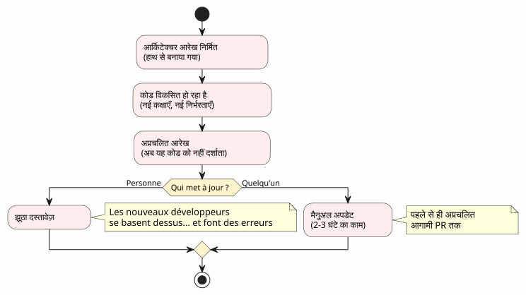
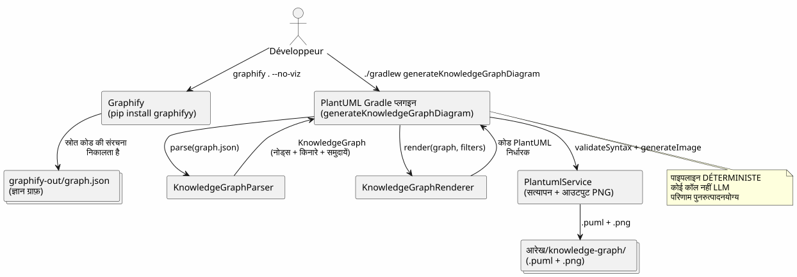
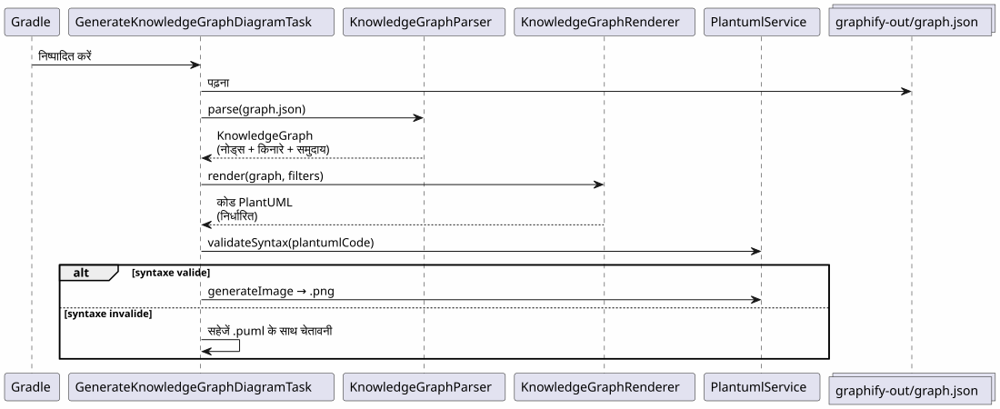
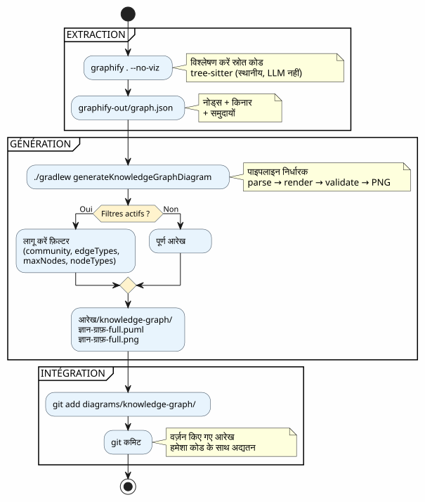
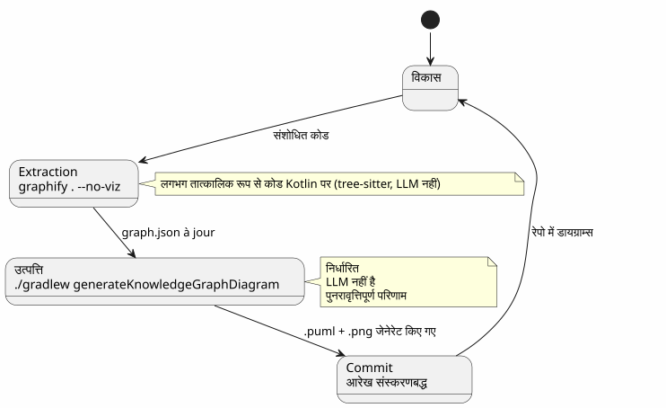
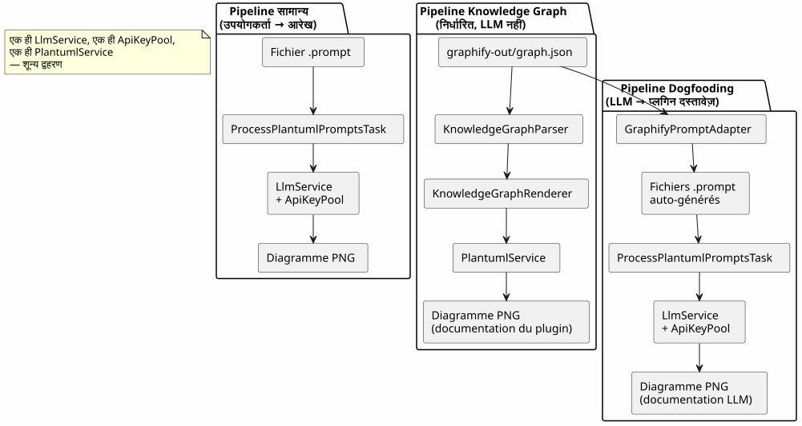
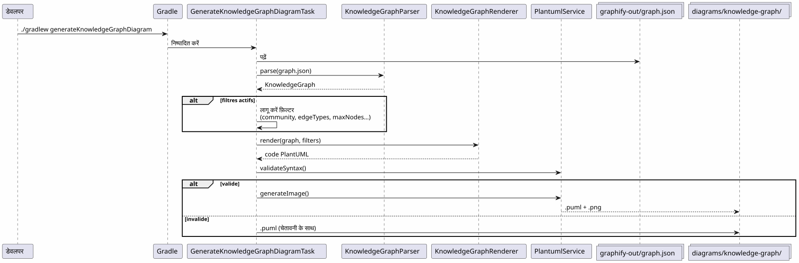
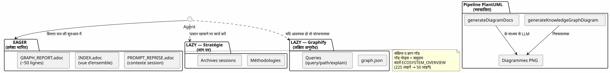
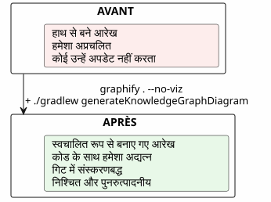

Gradle वर्कफ़्लो में Graphify को इंटेग्रेट करें : Knowledge Graph से PlantUML आरेख तक एक आदेश में
प्रकाशित: 19 April 2026
- समस्या: आरेख हमेशा कोड के पीछे रहते हैं
- समाधान: एक निर्धारित Knowledge Graph → PlantUML पाइपलाइन
- चरण 1 : Graphify इंस्टॉल करें और Knowledge Graph एक्सट्रैक्ट करें
- चरण 2 : Gradle प्लगइन Knowledge Graph को PlantUML में बदलता है
- चरण 3: दैनिक उपयोग
- ग्रेडल वर्कफ़्लो में पूर्ण पाइपलाइन
- डॉगफ़ूडिंग : प्लगइन खुद को दस्तावेज़ीकृत करता है
- क्योंकि यह निर्धारक है (और यह क्यों मायने रखता है)
- पाइपलाइन के स्वयं के आरेख
- परियोजना शासन में एकीकरण
- सेटअप: 5 मिनट की चेकलिस्ट
- जाल और शमन
- अंत में प्राप्त होता है
- लिंक
आपका कोडबेस बढ़ रहा है। मॉड्यूल्स के बीच की निर्भरताएँ बढ़ रही हैं। आर्किटेक्चर दस्तावेज़ लिखे जाने से पहले ही पुराना हो जाता है। और यदि आपका Gradle बिल्ड automatiquement वास्तविक कोड संरचना से अप‑टू‑डेट डायग्राम उत्पन्न कर सके ? यह वही है जो Graphify + PlantUML Gradle Plugin पाइपलाइन करता है :`graphify . --no-viz`Knowledge Graph को निकालता है,`./gradlew generateKnowledgeGraphDiagram`इसे PlantUML आरेखों में बदलता है। शून्य LLM, शून्य मैनुअल, 100% निर्धारित।
समस्या: आरेख हमेशा कोड के पीछे रहते हैं
कुछ हज़ार पंक्तियों से अधिक वाली प्रत्येक परियोजना इस सिंड्रोम का अनुभव करती है :
-
हम प्रोजेक्ट के शुरुआत में आर्किटेक्चर डायग्राम बनाते हैं।
-
कोड विकसित हो रहा है, निर्भरताएँ बदल रही हैं
-
आरेख सजावटी झूठ बन जाता है
-
कोई इसे अपडेट नहीं करता क्योंकि यह थकाऊ है।
-
नए आगंतुक इस पर आधारित होते हैं और गलतियाँ करते हैं

प्रश्न यह नहीं है कि क्या हमें आरेख चाहिए — सभी जानते हैं कि हाँ। प्रश्न यह है:कौन उन्हें अद्यतन रखता है ?
जवाब: कोई नहीं। सिवाय इसके कि यह स्वचालित हो।
समाधान: एक निर्धारित Knowledge Graph → PlantUML पाइपलाइन
सिद्धांत सरल है: हाथ से आरेख बनाने के बजाय, हम उन्हेंवास्तविक कोड संरचना से उत्पन्न होता है.

दो कमांडें. बस यही है।
# Étape 1 : extraire le Knowledge Graph
graphify . --no-viz
# Étape 2 : générer les diagrammes PlantUML
./gradlew generateKnowledgeGraphDiagramपरिणाम ? फ़ाइलें`.puml` et .png`में`diagrams/knowledge-graph/, Git में संस्करणित, हमेशा कोड के साथ अद्यतन।
चरण 1 : Graphify इंस्टॉल करें और Knowledge Graph एक्सट्रैक्ट करें
स्थापना
Graphify एक पायथन टूल है जो आपका कोडबेस विश्लेषण करता है और एक संरचित ज्ञान ग्राफ़ बनाता है:
# Méthode recommandée
uv tool install graphifyy && graphify install --platform opencode
# Alternative avec pip
pip install graphifyy && graphify install --platform opencodeअपवादों को कॉन्फ़िगर करें
एक फ़ाइल बनाएँ`.graphifyignore`प्रोजेक्ट के मूल में व्यवसायिक तर्क से संबंधित नहीं होने वाली फ़ाइलों को बाहर रखने के लिए:
# Secrets — JAMAIS dans le graphe
*-context.yml
*.env
# Fichiers générés
build/
.gradle/
# Tests fonctionnels
src/functionalTest/ज्ञान ग्राफ़ निकालें
graphify . --no-vizफ़्लैग`--no-viz`HTML जनरेशन को छोड़ देता है (Gradle पाइपलाइन में अनावश्यक)। परिणाम एक फ़ाइल है।`graphify-out/graph.json`सामग्री :
-
गाँठें: क्लास, फ़ंक्शन, फ़ाइलें — उनके प्रकार और समुदाय के साथ
-
किनारेनोड्स के बीच संबंध (EXTRACTED कोड से, INFERRED LLM द्वारा)
-
समुदायसंबद्ध नोड्स के स्वचालित समूह
{
"nodes": [
{"id": "0", "label": "LlmService", "file_type": "code", "community": 0},
{"id": "1", "label": "ApiKeyPool", "file_type": "code", "community": 0},
{"id": "2", "label": "PlantumlService", "file_type": "code", "community": 1}
],
"links": [
{"source": "1", "target": "0", "relation": "uses", "confidence": "EXTRACTED", "weight": 0.9},
{"source": "0", "target": "2", "relation": "calls", "confidence": "INFERRED", "weight": 0.7}
]
}|
स्रोत कोड ( |
चरण 2 : Gradle प्लगइन Knowledge Graph को PlantUML में बदलता है
पाइपलाइन की आर्किटेक्चर
प्लग इन`com.cheroliv.plantuml`एक कार्य को एकीकृत करता है`generateKnowledgeGraphDiagram`जो बदलता है`graph.json`PlantUML डायग्रामों में तरीके सेपूरी तरह निर्धारक :

आंतरिक घटक
| घटक | भूमिका |
|---|---|
|
पार्स`graph.json`— समर्थन करता है 3 प्रारूप: graphify natif ( |
|
एक को निर्धारित रूप से बदलता`KnowledgeGraph`PlantUML कोड में. प्रकार द्वारा समूह, पैकेज में समुदाय, स्वचालित लीजेंड। |
|
ग्रेडल कार्य जो parse → render → validate → PNG को ऑर्केस्ट्रेट करता है। Gradle गुणों के माध्यम से कॉन्फ़िगर करने योग्य। |
|
डेटा मॉडल:`KnowledgeGraph`, |
|
सिंटैक्स मान्यता + PNG रेंडरिंग (प्लगइन के सभी कार्यों द्वारा पुनः उपयोग किया जाता) |
रेंडरिंग के नियम
रेन्डरर निर्दिष्ट दृश्य सम्मेलन लागू करता है:
| किनारे का प्रकार | PlantUML नोटेशन | अर्थ |
|---|---|---|
EXTRACTED |
|
स्रोत कोड से निकाली गई संबंध (निश्चितता) |
INFERRED |
|
LLM द्वारा अनुमानित संबंध (विश्वास स्कोर) |
Please provide the French text you would like translated into Hindi. |
|
अस्पष्ट संबंध (जाँचने की आवश्यकता) |
समुदायों को स्वचालित रंग पैलेट वाले PlantUML पैकेज के रूप में प्रस्तुत किया जाता है।
चरण 3: दैनिक उपयोग
पूर्ण आरेख
# Générer le diagramme du Knowledge Graph complet
./gradlew generateKnowledgeGraphDiagramआउटपुट:`diagrams/knowledge-graph/knowledge-graph-full.puml`(No response).png
समुदाय द्वारा फ़िल्टर
# Une seule communauté
./gradlew generateKnowledgeGraphDiagram \
-Pplantuml.kg.community=community_0
# Limiter le nombre de noeuds (lisibilité)
./gradlew generateKnowledgeGraphDiagram \
-Pplantuml.kg.community=community_0 \
-Pplantuml.kg.maxNodes=15एज प्रकार के अनुसार फ़िल्टर करें
# Uniquement les relations certaines (EXTRACTED)
./gradlew generateKnowledgeGraphDiagram \
-Pplantuml.kg.edgeTypes=EXTRACTED
# Relations certaines + inférées
./gradlew generateKnowledgeGraphDiagram \
-Pplantuml.kg.edgeTypes=EXTRACTED,INFERREDनोड के प्रकार और विश्वास द्वारा फ़िल्टर करें
# Uniquement les classes de code
./gradlew generateKnowledgeGraphDiagram \
-Pplantuml.kg.nodeTypes=code
# Seuil de confiance minimum (pour les INFERRED)
./gradlew generateKnowledgeGraphDiagram \
-Pplantuml.kg.minConfidence=0.7कस्टम आउटपुट निर्देशिका
./gradlew generateKnowledgeGraphDiagram \
-Pplantuml.kg.outputDir=docs/architectureगुणों की पूरी सूची
| संपत्ति | डिफ़ॉल्ट | Description |
|---|---|---|
|
(सभी) |
नाम से समुदाय फ़िल्टर करें (उप-स्ट्रिंग मिलान) |
|
(सभी) |
विराम चिह्न से अलग किए गए किनारों के प्रकार :`EXTRACTED`, |
|
|
किनारों के लिए न्यूनतम विश्वास सीमा |
|
(असीमित) |
प्रदर्शित किए जाने वाले नोड्स की अधिकतम संख्या |
|
(सभी) |
विराम चिन्ह से अलग किए गए नोड्स के प्रकार (उदाहरण`class`, |
|
|
फ़ाइलों के लिए आउटपुट निर्देशिका`.puml` et |
ग्रेडल वर्कफ़्लो में पूर्ण पाइपलाइन
कार्यप्रवाह प्रकार

विकास चक्र में एकीकरण
पाइपलाइन विकास के प्रमुख चरणों में स्वाभाविक रूप से एकीकृत होती है:

इंक्रीमेंटल अपडेट
जब कोड बदलता है, तो हम शून्य से पूरा ग्राफ़ फिर से नहीं बनाते:
# Mise à jour incrémentale (fichiers modifiés uniquement)
graphify . --update
# Puis régénérer les diagrammes
./gradlew generateKnowledgeGraphDiagram|
|
डॉगफ़ूडिंग : प्लगइन खुद को दस्तावेज़ीकृत करता है
PlantUML प्लगिन प्रॉम्प्ट को आरेखों में परिवर्तित करने के लिए उपलब्ध है। यह Knowledge Graph को अपनी propre codebase से दस्तावेज़ीकरण आरेखों में भी परिवर्तित कर सकता है। यह dogfooding है: प्लगिन अपनी सेवा की खपत करता है।

Gradle से संबंधित कार्य :
| कार्य | LLM ? | विवरण |
|---|---|---|
|
नहीं |
परिवर्तित करो`graph.json`में PlantUML (निर्धारित) |
|
हाँ |
कुछ जनरेट करता है`.prompt`ग्राफ़ से, उन्हें LLM (डॉगफ़ूडिंग) के माध्यम से संसाधित किया जाता है |
# Documentation déterministe (rapide, pas de LLM)
./gradlew generateKnowledgeGraphDiagram
# Documentation LLM (plus riche, consomme des tokens)
./gradlew generateDiagramDocsक्योंकि यह निर्धारक है (और यह क्यों मायने रखता है)
पाइपलाइन का मुख्य बिंदु`generateKnowledgeGraphDiagram`:वह किसी भी LLM को नहीं बुलाता है. परिवर्तन`graph.json`PlantUML एक शुद्ध फ़ंक्शन है।
Failed to generate image: PlantUML preprocessing failed: [From <input> (line 11) ]
@startuml
skinparam backgroundColor #FEFEFE
skinparam componentStyle rectangle
rectangle "पाइपलाइन DÉTERMINISTE\n(generateKnowledgeGraphDiagram)" as det {
[graph.json] as json
[KnowledgeGraphParser] as parser
[KnowledgeGraphRenderer] as renderer
[PlantUML code] as puml
json --> पार्सr : पार्स
^^^^^
Syntax Error? (Assumed diagram type: component)
@startuml
skinparam backgroundColor #FEFEFE
skinparam componentStyle rectangle
rectangle "पाइपलाइन DÉTERMINISTE\n(generateKnowledgeGraphDiagram)" as det {
[graph.json] as json
[KnowledgeGraphParser] as parser
[KnowledgeGraphRenderer] as renderer
[PlantUML code] as puml
json --> पार्सr : पार्स
parser --> renderer : KnowledgeGraph
renderer --> puml : रेन्डर (शुद्ध फ़ंक्शन)
}
rectangle "पाइपलाइन LLM\n(processPlantumlPrompts)" as llm {
[.prompt] as prompt
[LlmService] as llmSvc
[ChatModel] as model
[PlantUML code] as puml2
prompt --> llmSvc
llmSvc --> model : API call
model --> puml2 : अनिर्धारित प्रतिक्रिया
}
note bottom of det
समान इनपुट → समान आउटपुट
नेटवर्क विलंब नहीं
टोकन में कोई लागत नहीं
CI में पुनरुत्पादन योग्य
end note
note bottom of llm
एक ही इनपुट → चर आउटपुट
नेटवर्क विलंबता (1-5s)
टोकन लागत
इसे एक कुंजी की आवश्यकता है API
end note
@enduml
वास्तविक लाभ
| लाभ | प्रभाव |
|---|---|
पुनरुत्पादनीयता |
वही`graph.json`→ एक ही आरेख. सटीक। हर बार। |
शून्य लागत |
कोई LLM कॉल नहीं = कोई टोकन नहीं = कोई API बिल नहीं। |
शून्य विलंब |
पार्स + रेंडर को लगभग 100ms लगता है, 1-5 सेकंड नहीं। |
संगत CI |
कोई एपीआई कुंजी आवश्यक नहीं है। चर LLM प्रतिक्रिया के कारण कोई अस्थिर परीक्षण नहीं है। |
संस्करणयोग्य |
Le |
पाइपलाइन के स्वयं के आरेख
लूप को पूरा करने के लिए, यहाँ पाइपलाइन का आरेख है जैसा कि प्लगइन द्वारा उत्पन्न किया जाएगा।

परियोजना शासन में एकीकरण
हमारे प्रोजेक्ट में, यह पाइपलाइन एजेंट आईए के लिए EAGER/LAZY संदर्भ प्रबंधन रणनीति में एकीकृत होती है। नॉलेज ग्राफ़ मैनुअल आर्किटेक्चर दस्तावेज़ को एक संरचित, क्वेरी योग्य और स्वतः अपडेटेड ग्राफ़ से बदलता है।

दो प्रणालियों का संयोजन पूरक :
-
रणनीति कब और कैसे का प्रबंधन करती है।— शासन, कार्यप्रवाह, संग्रहण
-
Graphify क्या और कहाँ प्रबंधित करता हैकोड की संरचना, संबंध, लक्षित क्वेरी
Please provide the French text you would like translated into Hindi. सत्र रणनीति प्रबंधित करती हैकब et le कैसे(शासन, कार्यप्रवाह, सीमाएँ), Graphify इसका प्रबंधन करता हैक्या et le कहाँ(कोड की संरचना, संबंध, लक्षित प्रश्न)। PlantUML पाइपलाइन प्रबंधन करती हैक्या से?(निर्धारित आरेख, संस्करणबद्ध, हमेशा अपडेटेड). __
सेटअप: 5 मिनट की चेकलिस्ट
| (Empty) | चरण | ऑर्डर |
|---|---|---|
1 |
Graphify को इंस्टॉल करें |
|
2 |
अपवर्जनों को कॉन्फ़िगर करें |
बनाएँ`.graphifyignore` |
3 |
Knowledge Graph निकालें |
|
4 |
डायग्राम उत्पन्न करें |
|
5 |
परिणामों को कमिट करें |
|
# Script complet en 5 commandes
uv tool install graphifyy
cat > .graphifyignore << 'EOF'
*-context.yml
*.env
build/
.gradle/
EOF
graphify . --no-viz
./gradlew generateKnowledgeGraphDiagram
git add graphify-out/GRAPH_REPORT.adoc graphify-out/graph.json diagrams/knowledge-graph/जाल और शमन
| जाल | विवरण | शमन |
|---|---|---|
बहुत घना ग्राफ़ |
एक बड़ा प्रोजेक्ट सैकड़ों अस्पष्ट नोड्स उत्पन्न करता है |
उपयोग करना`-Pplantuml.kg.maxNodes=30`और समुदाय द्वारा फ़िल्टर करें |
बहुत व्यापक बहिष्करण |
बहुत सारी फ़ाइलें में`.graphifyignore`ग्राफ़ के मान को कम करता है |
सबसे पहले केवल क्रेडेंशियल्स और बिल्ड को बाहर रखें |
तीरों की दिशा |
INFERRED किनारों की दिशा अस्पष्ट हो सकती है |
फ़िल्टर द्वारा`-Pplantuml.kg.edgeTypes=EXTRACTED`केवल निश्चित संबंधों के लिए |
अप्रचलित ग्राफ़ |
कोड बदलता है, लेकिन ग्राफ़ पुनः नहीं बनाया जाता। |
उपयोग`graphify . --update`नियमित रूप से या गिट हुक`graphify hook install` |
अद्यायित लागत |
अतिरिक्त अपडेट्स लगभग मुफ़्त हैं (tree-sitter local) |
केवल दस्तावेज़ ( |
अंत में प्राप्त होता है

वास्तविक लाभ :
| लाभ | विवरण |
|---|---|
दस्तावेज़ हमेशा अपडेटेड |
डायग्राम्स वर्तमान कोड को दर्शाते हैं, कोई मैनुअल स्नैपशॉट नहीं। |
रखरखाव के लिए कोई मेहनत नहीं |
डायग्राम प्रत्येक बिल्ड पर पुनः उत्पन्न होते हैं |
तकनीकी ऋण में कमी |
अब डायग्राम को हाथ से रखरखाव करने की ज़रूरत नहीं है। |
नए लोगों के लिए दृश्य संदर्भ |
एक नया डेवलपर डायग्राम देखकर आर्किटेक्चर समझता है |
संभावित फ़ाइन-ट्यूनिंग |
जोड़े (उप-ग्राफ़ → आरेख) कृत्रिम बुद्धिमत्ता प्रशिक्षण के उदाहरण हैं |
स्वचालित मान्यता |
`PlantumlService.validateSyntax()`प्रत्येक उत्पन्न आरेख़ की जाँच करता है |
त्वरित ओनबोर्डिंग |
5 डायग्राम्स = वास्तुकला का पूर्ण दृश्य |
__ जिसके पास एक क्यों है वह सभी कैसे सहन कर सकता है। (Note: No visible characters)
क्यों : आरेख हमेशा अप-टू-डेट रहते हैं। कैसे : Gradle पाइपलाइन में दो कमांड।
लिंक
-
fg कमांड के सुपर टिप्स— पिछला टर्मिनल वर्कफ़्लो पर लेख